ຮູບພາບປະກອບນາປີ
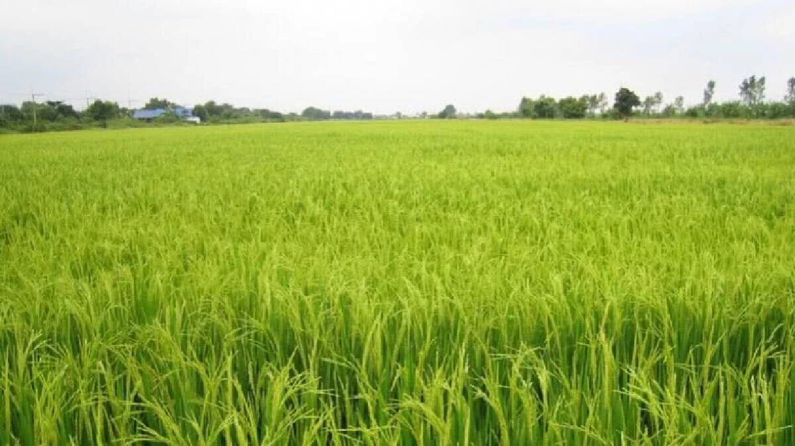
ຮູບພາບປະກອບນໍ້າຊົ້ນລະປະທານ
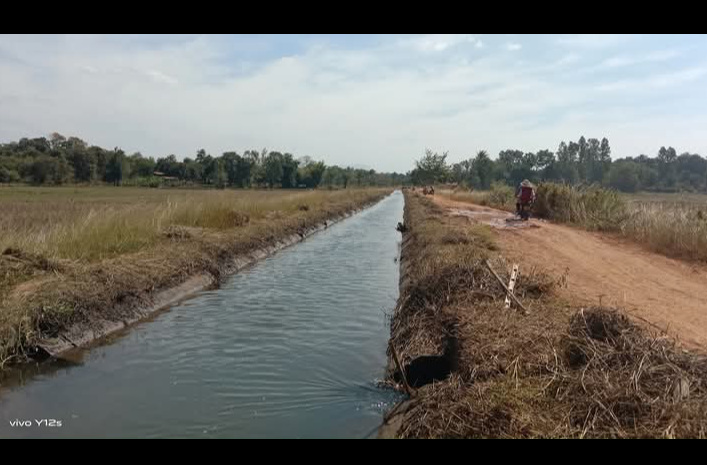
ລະດູການໃນການປູກເຂົ້າ
ການປູກເຂົ້າສ່ວນຫຼາຍຍັງໃຊ້ເຂົ້າທີິ່ໄວຕໍ່ຊ່ວງແສງ ເຊິ່ງຕ້ອງມີການປ່ຽນແປງລະດູການ ປູກໃຫ້ເປັນໄປຕາມອາຍຸ, ໄລຍະການຈະເລີນເຕີບໂຕ ແລະ ການໃຫ້ຜົນຜະລິດທີິ່ພົວພັນກັນ ກໍຄືລະດູການ ທີິ່ເໝາະສົມຄື ລະດູ ຝົນ ເຊິ່ງຈະເຮັດໃຫ້ເຂົ້າໄດ້ຮັບນໍ້າຢ່າງພຽງພໍພ້ອມທັງຊ່ວງແສງກໍ ເໝາະສົມກັບໄລຍະ ຕ່າງໆຂອງເຂົ້າ. ຈະສັງເກດໄດ້ຈາກການເຮັດນາທີິ່ເໝາະສົມກັບລະດູການ ເຂົ້າຈະມີການຈະເລີນເຕີບໂຕຢ່າງ ເຕັມທີ່, ແຕ່ຖ້າລ້າຊ້າເກີນໄປກໍ ຈະມີການຈະ ເລີນເຕີບໂຕບໍ່ເຕັມທີ່ ແລະ ໃຫ້ຜົນຜະລິດຕໍ່າ. ແຕ່ເຖິງຢ່າງໃດ ກໍຕາມ ລະດູການເຮັດນາໃນປະເທດເຮົາແບ່ງອອກເປັນ 2 ລະດູການຄື:
1. ລະດູນາປີ: ເປັນລະດູການເຮັດນາຂອງທຸກພາກໃນປະເທດ ແຕ່ພາກເໜືອຕະຫອດ ໃຕ້ ເຊິ່ງເລີິ່ມຈາກເດືອນພຸດສະພາ ຫາ ກໍລະກົດຂອງທຸກປີ.
2. ລະດູນາແຊງ: ເປັນການເຮັດນາລະດູແລ້ງ ປົກກະຕິຈະເຮັດໃນຂອບເຂດບໍລິເວນທີິ່ ມີນໍ້າຊົນລະປະທານເທົ່ານັ້ນ ໂດຍໃຊ້ພັນເຂົ້າທີິ່ ບໍ່ມີການປະຕິກິລິຍາຕໍ່ຊ່ວງແສງ ຈະເລີິ່ມຕົກກ້າແຕ່ກາງເດືອນ ພະຈິກຫາທັນວາ ເຊິ່ງເປັນຊ່ວງໄລຍະທີິ່ເໝາະສົມທີິ່ສຸດ.
ຕົວຢ່າງການປູູກນາດໍາ
ຮູບພາບປະກອບນາດໍາ
ການປູກເຂົ້ານາດໍາ
ໝາຍເຖິງການປູກເຂົ້າໂດຍການຕົກກ້າກ່ອນ ຈົ້ນກວ່າຕົ້ນກ້າມີການຈະເລີນເຕີບໃຫຍ່ພໍເໝາະສົມແລ້ວຈຶິ່ງຍ້າຍໄປປັກດໍາ ຕາມປູກກະຕິຕົ້ນກ້າຄວນມີອາຍຸປະມານ 25-30 ວັນ ຈຶ່ງ ສາມາດນໍາໄປປັກດໍາໄດ້. ການປູກເຂົ້ານາດໍານີ້ ຖ້າປູກຢູ ່ໃນລະດູ ຝົນກໍ ເອີ້ນວ່ານາປີ, ແຕ່ຖ້າ ປູກຢູ ່ໃນລະດູ ແລ້ງກໍ ເອີ້ນວ່ານາ ແຊງ.
ຂໍ້ດີ ເເລະ ຂໍ້ ເສຍ ຂອງການເຮັດນາດໍາ
ກ.ຂໍ້ດີ
- ເຂົ້າມີການຈະເລີນເຕີບໃຫຍ່ສະໝໍ່າສະເໝີດີ
- ສະດວກໃນການບົວລະບັດຮັກສາ
- ວັດຊະພຶດເກີດຂຶື້ນໜ້ອຍ
- ໃຫ້ຜົນຜະລິດສູງ
- ສາມາດນຊາໃຊ້ພື້ນທີິ່ໄດ້ຢ່າງເຕັມທີິ່
ຂ. ຂໍ້ເສຍ
- ມີຫຼາຍຂັ້ນຕອນການປະຕິບັດ
- ສື້ນເປືອງແຮງງານຫຼາຍ
- ຕົ້ນທຶນການຜະລິດສູງ
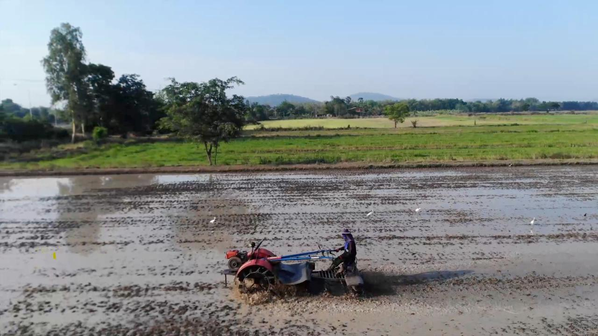
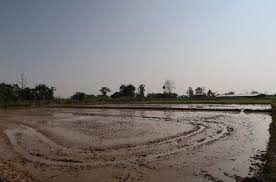
ການກຽມດິນເຮັດນາດໍາ
ການໄຖເປັນການກຽມດິນເພື່ອເຮັດໃຫ້ສະພາບຂອງດິນ ເໝາະແກ່ ການປັກດໍາ ເຊິ່ງມີການໄຖ ແລະ ຄາດ. ການໄຖ ແລະ ຄາດແຕ່ລະຄັ້ງນັ້ນ ຄວນກໍາຈັດວັດຊະພຶດ ອອກໃຫ້ ດີທີິ່ສຸດ, ການທີິ່ຈະກໍາຈັດວັດຊະພຶດໃຫ້ໄດ້ຫຼາຍທີິ່ສຸດນັ້ນ ຫຼັງຈາກໄຖຄັ້ງທີໜຶິ່ງແລ້ວ ຄວນປ່ອຍໃຫ້ເມັດວັດ ຊະພຶດທີິ່ມີຢູ່ໃນດິນງອກຂຶື້ນມາຈຶ່ງທໍາການໄຖອີກ. ຈາກນັ້ນກ່ອນຈະປັກດໍາ ຈຶິ່ງຄາດເປັນຄັ້ງສຸດທ້າຍ. ໃນການ ໄຖແຕ່ລະຄັ້ງຄວນໄຖເລິກປະມານ 25-30 cm ແລະ ຄາດໃຫ້ລະອຽດ ເຊຶ່ງການໄຖ ສາມາດໃຊ້ແຮງງານ ລາກແກ່, ເຄື່ອງຈັກ ເຊັ້ນ: ລົດໄຖນາ ເດີນຕາມ, ລົດໄຖຂະໜາດກາງ ແລະ ຂະໜາດໃຫຍ່.
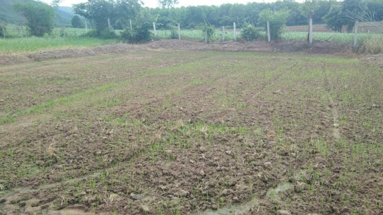
ການເລືອກສະຖານທີິ່ ແລະ ຊະນິດຂອງກ້າການເລືອກສະຖານທີິ່ຕົກກ້າ
- ຢູ່ໃກ້ແຫຼ່ງນໍ້າ, ສາມາດລະບາຍນໍ້າເຂົ້າ-ອອກໄດ້ສະດວກ.
- ເປັນບ່ອນທີິ່ມີຄວາມອຸດົມສົມບູນຂອງດິນດີ
- ເປັນບ່ອນທີິ່ບໍ່ເຄີຍເກີດພະຍາດມາກ່ອນ
- ລະດັບໜ້າດິນສະໝໍ່າສະເໝີ ນໍ້າສາມາດລະບາຍໄປທົ່ວ ພື້ນ ທີິ່ໄດ້ຢ່າງສະເໝີ
ຊະນິດຂອງກ້າ
ການຕົກກ້ານິຍົມໃຊ້ຫຫຼາຍຢູ່ໃນປະເທດເຮົາມີ 3 ແບບຄື:
ການຕົກກ້ານິຍົມໃຊ້ຫຫຼາຍຢູ່ໃນປະເທດເຮົາມີ 3 ແບບຄື:
- ກ້າຕົມ (Wet condition seedling): ເປັນການຕົກກ້າ ໃນສະພາບເນື້ອທີິ່ທີິ່ມີນໍ້າຂັງ ຫຼື ສາມາດເອົານໍ້າເຂົ້າມາລໍ່ລ້ຽງຕົ້ນກ້າຕະຫຼອດອາຍຸຂອງຕົ້ນກ້າ, ໃນການຕຽມດິນ ຄວນເຮັດໃຫ້ດິນເປັນຕົມດ້ວຍການໄຖ ແລ້ວຕາກແດດໄວ້ປະມານ 1 ອາທິດ ເພື່ອກໍາຈັດວັດຊະພຶດ ແລະ ແມງໄມ້ສັດຕູ ພຶດບາງຊະນິດທີິ່ອາໄສຢູ່ໃນດິນ ຈາກນັ້ນຈຶິ່ງລະບາຍນໍ້າເຂົ້າ ແລະ ຄາດໃຫ້ລະອຽດ ແລ້ວ ຍົກເປັນໜານກວ້າງປະມານ 1.5-2 m, ຄວາມຍາວ ແມ່ນຂຶື້ນກັບຄວາມເໝາະສົມຂອງເນື້ອທີິ່ ຫຼື ແບ່ງເປັນ ແປງນ້ອຍ ເພື່ອສະດວກໃນການບົວລະບັດຮັກສາ. ຈາກນັ້ນກໍລະບາຍນໍ້າອອກປະໄວ້ປະມານ 6-12 ຊົ້ວໂມງ ເພື່ອໃຫ້ຕົມນອນແລ້ວ ຈຶິ່ງເອົາເມັດພັນທີິ່ຜ່ານການແຊ່ ແລະ ບົ່ມທີິ່ງອກແລ້ວນັ້ນໄປຫວ່ານໃຫ້ສະໝໍ່າສະເໝີ ແຕ່ບໍ່ໃຫ້ ຫວ່ານຖີິ່ ຫຼື ຫ່າງເກີນໄປເພາະຈະເຮັດໃຫ້ໄດ້ຕົ້ນກ້າບໍ່ສົມບູນ.
- ກ້າແຫ້ງ (Dry condition seedling): ເປັນການຕົກກ້າ ໃນສະພາບດິນທີິ່ຄ້ອນຂ້າງແຫ້ງ ແຕ່ໃນດິນຕ້ອງມີຄວາມຊຸ່ມພໍທີິ່ຈະໃຫ້ຕົ້ນກ້າສາມາດນໍາໄປໃຊ້ ໃນການຈະ ເລີນເຕີບໂຕ, ການກຽມດິນແມ່ນເຮັດຢູ່ໃນສະພາບດິນທີິ່ບໍ່ມີນໍ້າຂັງ ພຽງແຕ່ມີຄວາມຊຸ່ມເລັກນ້ອຍໃນໄລຍະ ທີິ່ໄດ້ກ້າລົງໄປຫາກຝົນບໍ່ຕົກຈໍາເປັນຕ້ອງໄດ້ຫົດນໍ້າ.
- ກ້າສັກ: ເປັນການສັກຄືກັບການສັກເຂົ້າໄຮ່ ແຕ່ການສັກ ແມ່ນສັກຖີິ່ໆ ແລະ ຢອດເມັດໃສ່ຂຸມຫຼາຍກວ່າເຂົ້າໄຮ່, ໃຊ້ລຸ້ງ ຫຼື ໄມ້ແຫຼມສັກເປັນຂຸມຫ່າງກັນ ປະມານ 1- 2 cm, ຢອດປະມານ 15-20 ເມັດຕໍ່ຂຸມ ເຊິື່ງການຕົກກ້າແບບນີ້ແມ່ນເໝາະສໍາລັບເນື້ອທີິ່ນານໍ້າຝົນເຊິ່ງ ນິຍົມໃຊ້ກັນຫຼາຍຢູ່ທາງພາກເໜືອທີິ່ບໍ່ມີນໍ້າຊົນລະປະທານ.
ການກຽມເມັດພັນ ແລະ ການຕົກກ້າຕົມ ການເຮັດຄວາມສະອາດເມັດພັນ:
ການກຽມເມັດພັນ ແລະ ການຕົກກ້າຕົມ ການເຮັດຄວາມສະອາດເມັດພັນ: ເມັດພັນທີິ່ຈະນໍາໄປຕົກກ້ານັ້ນ ຄວນຈະທໍາຄວາມສະອາດເສຍກ່ອນ ໂດຍການໃຊ້ດົ້ງຝັດ ຫຼື ນໍາໄປຟູນໍ້າ ເພື່ອເຮັດໃຫ້ເມັດທີິ່ລີບ ຫຼຶື ທີິ່ຖືກມອດເຈາະນັ້ນອອກໄປໃຫ້ເຫຼືອແຕ່ເມັດທີິ່ຕຶ່ງເຕັມດີໄວ້ເທົ້ານັ້ນ ເມື່ອນໍາໄປຕົກກ້າຈະເຮັດໃຫ້ຕົ້ນກ້າງອກຂຶື້ນໄດ້ສະໝໍ່າສະເໝີ.
ຈໍານວນເມັດພັນຕໍ່ເນື້ອທີິ່:
ຈໍານວນເມັດພັນຕໍ່ເນື້ອທີິ່ປັກດໍາຕາມ ປົກກະຕິແລ້ວ ຫາກເປີເຊັນຄວາມງອກຂອງເມັດພັນຢ ່ລະດັບ 80% ຂຶື້ນໄປແມ່ນຈະໃຊ້ປະ ມານ 40-50 kg/ha. ອັດຕາການຫວ່ານເມັດພັນຕໍ່ເນື້ອທີິ່ຕາກ້າແມ່ນ 100g/m2 ແລະ ອັດຕາ ສ່ວນລະຫວ່າງ ເນື້ອທີິ່ຕາກ້າຕໍເນື້ອທີິ່ປັກດໍາແມ່ນ 1:20 (ໝາຍວ່າເນື້ອທີິ່ຕາກ້າ 1 ສ່ວນ ສາມາດປັກດໍາໄດ້ໃນເນື້ອທີິ່ 20 ສ່ວນ)
ການແຊ່ ແລະ ການບົ່ມເມັດພັນ:
ນໍາເອົາເມັດພັນບັນຈຸໃສ່ເປົາ (ຖ້າຈະໃຫ້ດີຕ້ອງເປັນເປົາປ່ານ) ແລ້ວນໍາໄປແຊ່ນໍ້ານານເຖິງ 24 ຊົ່ວໂມງ ເພື່ອກະຕຸູ້ນຄວາມງອກຂອງເມັດ ໃຫ້ໄວຂຶື້ນ (ຖ້າຈໍາເປັນກໍໃຫ້ແຊ່ນໍ້າເກືອເພື່ອຈະຊ່ວຍທໍາລາຍການພັກຕົວຂອງເມັດພັນ ແລະ ປ້ອງກັນການ ເກີດພະຍາດເຂົ້າຜູ້ໄດ້). ພາຍຫຼັງແຊ່ນໍ້າໄດ້ຕາມກໍານົດແລ້ວກໍນໍາມາບົ່ມໂດຍໃຊ້ຜ້າຢາງ ຫຼື ໃບຕອງແຫ້ງມາປູ ຮອງພື້ນ ຈາກນັ້ນ ນໍາເອົາເປົາທີິ່ບັນຈຸເມັດພັນນັ້ນມາວາງໃສ່ເປັນກອງແລ້ວໃຫ້ໃຊ້ຜ້າຢາງ ຫຼື ເປົາປົກຄຸມເພື່ອ ໃຫ້ເກີດຄວາມຮ້ອນ ບົ່ມໄວ້ປະມານ 36-48 ຊົ່ວໂມງ ຖ້າແມ່ນຍາມໜາວອາດຈະບົ່ມໃຊ້ເວລາເຖິ່ງ 72 ຊົ່ວໂມງ ເມັດຈຶິ່ງງອກ. ເມື່ອເມັດພັນງອກຂຶື້ນມາ ແລະ ພ້ອມທີິ່ຈະນໍາໄປຫວ່ານລົງໃນໜານກ້າໄດ້. ໃນເວລາ ທີິ່ບົ່ມເມັດພັນນັ້ນທຸກໆ 6 ຊົ່ວໂມງ ຕ້ອງໄດ້ຕິດຕາມໂດຍການກວດກາເບິ່ງຢູ່ໃນເປົາເມັດພັນນັ້ນ ມີຄວາມ ເໝາະສົມບໍ່ ຖ້າມີຄວາມຮ້ອນຄວນຈະໃຊ້ນໍ້າອຸ່ນ 50-60°C ຫົດລົງໄປ. ຖ້າຮ້ອນເກີນໄປ ຫຼື ຄວາມຊຸ່ມຢູ່ ໃນເປົາເມັດພັນມີໜ້ອຍກໍ ໃຫ້ເອົານໍ້າທໍາມະດາຫົດລົງໄປ, ແຕ່ລະຄັ້ງທີິ່ຕິດຕາມເບິ່ງ ຄວນປີ້ນເປົາ ເມັດພັນ ໂດຍປີ້ນເອົາເບື້ອງລຸ່ນຂຶື້ນເທິງ ແລະ ເບື້ອງເທິງລົງລຸ່ມ ເພື່ອເຮັດໃຫ້ການ ງອກຂອງເມັດພັນແຕກງອກສະໝໍ່າ ສະເໝີ.
ການຫວ່ານກ້າ:
ການກຽມໜານກ້າ ແລະ ກຽມເມັດພັນນັ້ນຕ້ອງ ກຽມໃຫ້ຄຽງຄູ່ກັນໄປ ເມື່ອເມັດພັນເຂົ້າງອກພໍດີຫວ່ານ ໜານກ້າກໍຕ້ອງພ້ອມທີິ່ຈະຫວ່ານໄດ້ຄືກັນ. ການຫວ່ານກ້າລົງໃນໜານກ້າ ຄວນຫວ່ານໃຫ້ສະໝໍ່າສະເໝີ ໂດຍບໍ່ໃຫ້ຖີິ່ ຫຼື ຫ່າງເກີນໄປ ເພາະຖ້າຫວ່ານຖີິ່ຈະ ເຮັດໃຫ້ໄດ້ຕົ້ນກ້ານ້ອຍບໍ່ແຂງແຮງ ເວລາຫຼົກຈະເຮັດໃຫ້ຕົ້ນກ້າຂາດ ແລະ ຊໍ້າ, ຖ້າຫວ່ານຫ່າງເກີນໄປຈະເປັນ ການສຶ້ນເປືອງເນື້ອທີິ່ຕາກ້າ, ຈະໄດ້ກ້າກີບໃຫຍ່, ຮາກຫຼາຍຫຼົກຍາກ, ຕົ້ນກ້າມັກຂາດ ແລະ ຫັກໄດ້ງ່າຍ.
ການບົວລະບັດຮັກສາຕາກ້າ
ພາຍຫຼັງຫວ່ານເມັດພັນລົງໄປໃໝ່ໆບໍ່ຄວນລະບາຍນໍ້າເຂ ື້າ ເພາະຈະ ເຮັດໃຫ້ເມັດເຂົ້າຟູ ແລະ ຖືກນໍ້າພັດອອກໄປ, ພາຍຫຼັງຫວ່ານໄປໄດ້ປະມານ 3-7 ວັນ ຖ້າຫາກບໍ່ມີຝົນຕົກ ມີແດດກ້າ ກໍ ໃຫ້ລະບາຍນໍ້າເຂົ້າພໍ ຖ້ວມໜ້າດິນທົ່ວແປງ ເພື່ອເຮັດໃຫ້ດິນມີຄວາມຊຸ່ມ. ເມື່ອອາຍຸຂອງຕົ້ນກ້າ ໄດ້ 2 ອາທິດ ກໍລະບາຍນໍ້າເຂົ້າໄປຂັງໄວ້ ໃຫ້ມີຄວາມເລກປະມານ 2-3 cm ແລະ ຄ່ອຍໆເພີິ່ມລະດັບນ ັ້າ ຂຶື້ນຕາມຄວາມສູງຂອງຕົ້ນກ້າ ຈົນກວ່າລະດັບນໍ້າສູງເຖິງ 5 cm ຫຼື 10 cm. ເມື່ອຕົ້ນກ້າມີອາຍຸປະມານ 2-3 ອາທິດ ຄວນໃສ່ຝຸ່ນເຄມີເພື່ອເລັ້ງການຈະເລີນ ຂອງຕົ້ນກ້າໃຫ້ໄວຂຶື້ນຄືໃສ່ຝຸ່ນສູດ 46-00-00 ໃສ່ 100 g/m2 ຫ ຝຸ່ນສູດ 16-20-00 ໃນ ປະລິມານ 20 g/m2 . ສ່ວນຝຸ່ນຄອກ ຫຼື ຝຸ່ນບົ່ມໃຫ້ໃສ່ໃນເວລາ ກຽມດິນໃນອັດຕາ 2 kg/m2 .
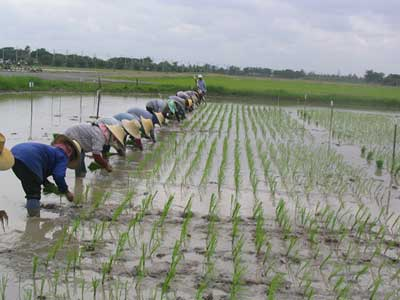
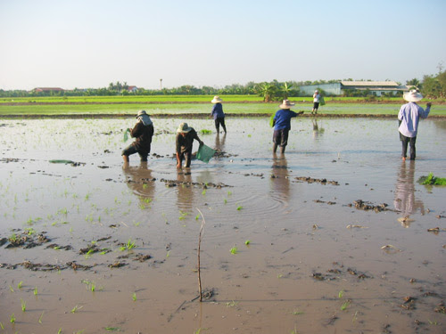
ການປັກດໍາ
ຈໍານວນກ້າຕໍ່ສຸມ:
ຈໍານວນກ້າຕໍ່ສຸມ:
ໝາຍເຖິງຕົ້ນກ້າທີິ່ຈະປັກດໍາລົງໄປຄັ້ງໜຶິ່ງປົກ ກະຕິ ແລ້ວ ການປັກດິາທີິ່ເໝາະສົມແມ່ນ 2-3 ກີບຕ່ໍສຸມ ແຕ່ຈົານວນກີບກ້າຫຼາຍ ຫຼື ໜ້ອຍແມ່ນ ຂຶື້ນ ກັບຫຼາຍປັດໃຈຄື:
- ອາຍຸ ແລະ ຂະໜາດຂອງຕົ້ນກ້າ
- ລະດູການປັກດໍາ
- ຄວາມອຸດົມສົມບະນຂອງດິນ
ໄລຍະຫ່າງຂອງການປັກດໍາ:
ໄລຍະຫ່າງຂອງການປັກດໍາທີິ່ເໝາະ ສົມຈະແຕກຕ່າງກັນໄປຕາມຊະນ ດພັນເຂົ້າເຊັ້ນ: ເຂົ້າພັນປັບປຸງທີິ່ເປັນເຂົ້າຕົ້ນຕໍ່າແມ່ນ 20x20 cm ຫຼື 25x25 cm. ສໍາລັບເຂົ້າພັນພື້ນເມືອງທີິ່ເປັນເຂົ້າຕົ້ນສູງແມ່ນ 25x30 cm ຫຼື 30x30 cm ເຊິື່ງໄລຍະຫ່າງ ປັກດໍາຈະຖີິ່ ຫຼື ຫ່າງນັັ້ນກໍ ຄວນພໍຈາລະນາເຖິງລະດູການ, ອາຍຸຂອງຕົ້ນກ້າ ແລະ ຄວາມອຸດົມສົມບູນຂອງດິນ.
ຄວາມເລິກໃນການປັກດໍາ:
ການປັກດໍາບໍ່ຄວນເລິກ ຫຼື ຕື້ນເກີນໄປ ເພາະຖ້າດໍາເລິກຈະເຮັດໃຫ້ຕາທີິ່ຢູ ່ຂໍ້ລຸ່ມຖ ກໍຝັງລົງໄປໃນດິນ ແລ້ວບໍ່ສາມາດແຕກເປັນແໜງອອກມາ ແຕ່ຖ້າ ດໍາຕື້ນເກີນໄປຈະເຮັດໃຫ້ເຂົ້າບໍ່ຢຶດຕິດກັບດິນ ຟື້ນຕົວໄດ້ຍາກ ຫຼື ຈະຟູຂຶື້ນມາ ພາຍຫຼັງປັກດໍາ. ດັ້ງນັ້ນ, ຄວນ ປັກດໍາໃຫ້ເລິກປະມານ 3-4 cm.
ວິທີການປັກດໍາ:
ສາມາດເຮັດໄດ້ 2 ວິທີຄື
ສາມາດເຮັດໄດ້ 2 ວິທີຄື
- ການດໍາເປັນແຖວ: ເປັນວິທີການປັກດໍາທີິ່ເປັນລະບຽບເປັນ ແຖວ ເໝາະສໍາລັບປັກດໍາໃນເນື້ອທີິ່ໜ້ອຍ, ນິຍົມໃຊ້ຫຼາຍໃນການທົດລອງເທົ່ານັ້ນ ສ່ວນຊາວນາ ແມ່ນບໍ່ນິຍົມໃຊ້ ເພາະດໍາໄດ້ຊ້າ. ການປັກດໍາເປັນແຖວຕົ້ນເຂົ້າຈະເລີນເຕີບໂຕໄດ້ດີສະໝໍ່າສະເໝີ, ການບົວລະບັດ ຮັກສາໄດ້ງ່າຍ ແລະ ໃຫ້ຜົນຜະລິດສູງກວ່ານາດໍາທໍາມະດາ 30%.
- ການດໍາສ້າວ: ເປັນວິທີການທີິ່ປັກດໍາບໍ່ເປັນລະບຽບ ເຊິ່ງຊາວ ນານິຍົມກັນປະຕິບັດທົ່ວໄປ ເພາະສາມາດປັກດໍາໄດ້ໄວ, ໄລຍະຫ່າງບໍ່ແນ່ນອນແລ້ວແຕ່ຄວາມຊໍານານຂອງ ຊາວນາແຕ່ລະຄົນ.
ການໃສ່ຝຸ່ນ
- ການໃສ່ຝຸ່ນຄອກ ຫຼື ຝຸ່ນບົ່ມແມ່ນການເພີິ່ມທາດອາຫານໃຫ້ແກ່ຕົ້ນເຂົ້າ, ເປັນ ການປະຢັດຕົ້ນທຶນ, ຮັກສາສະພາບແວດລ້ອມ ແລະ ສຸຂະພາບຂອງມະນຸດເຮົາອີກດ້ວຍ.
- ຫຼັງຈາກປັກດໍາໄດ້ 1-2 ອາທິດ ຕ້ອງໃສ່ຝຸ່ນຄອກອີກ ຍ້ອນວ່າໃນ ໄລຍະນີ້ເຂົ້າ ກໍາລັງແຕກຮາກ ແລະ ຕ້ອງການທາດອາຫານສູງ
- ອັດຕາການໃສ່ຝຸ່ນຄອກ ຫຼື ຝຸ່ນບົ່ມແມ່ນ 5-10 T/ha ໂດຍອີງຕາມຄວາມອຸດົມສົມບູນຂອງດິນ
- ຖ້າເປັນຝຸ່ນຂີື້ງົວໃຫ້ໃສ່ 8-10 T/ha (ໃສ່ພາຍຫຼັງໄຖຮຸດແລ້ວ)
- ຖ້າເປັນຝຸ່ນຂີ້ໄກ່ໃຫ້ໃສ່ 5-7 T/ha (ໃສ່ພາຍຫຼືງໄຖຮຸດແລ້ວ)
- ຖ້າເປັນຝຸ່ນຊີວະພາບໃຫ້ໃສ່ 1 T/ha (ໃສ່ພາຍຫຼືງໄຖຮຸດແລ້ວ)
- ຖ້າເປັນຝຸ່ນຈຸລິນຊີຍອດດອຍໃຫ້ໃສ່ 350 kg/ha
ການບົວລະບັດຮັກສາ (ເສຍຫຍ້າ ແລະ ພວນດິນ)
- ຍ້ອນວ່າການປູກເຂົ້າດ້ວຍກ້າກີບດຽວ ຕ້ອງໄດ້ເປັ່ງນໍ້າເຂົ້າ ແລະ ລະບາຍນໍ້າ ອອກເປັນປະຈໍາ ເຊິ່ງເຮັດໃຫ້ຫຍ້າເກີດຂຶື້ນໄດ້ງ່າຍ
ແລະ ໄວ. ດັ່ງນັ້ນ, ການຄວບຄຸມນໍ້າ ແລະ ເສຍຫຍ້າຕ້ອງໄດ້ ປະຕິບັດເປັນປະຈໍາຢ່າງໜ້ອຍ 2-3 ເທື່ອ ຫຼື ຫຼາຍກວ່ານັ້ນ.
- ວິທີເສຍຫຍ້າທີິ່ໄດ້ຮັບຜົນດີທີິ່ສຸດ ແມ່ນການນໍາໃຊູ້ເຄື່ອງຄາດຫຍ້າ ທີິ່ປະກອບມີ ໃບມີດເຫຼັກ ແລະ
ແຮງງານຄົນ ວິທີນີ້ເປັນວິທີທີິ່ງ່າຍ ເຊິ່ງແມ່ຍິງກໍ່ສາມາດເຮັດໄດ້, ເມື່ອເຮົາຍູ້ເຄື່ອງຄາດຫຍ້າໃບ ມີດກໍຈະໝູນ.
ການເສຍຫຍ້າດ້ວຍວິທີນີ້ຍັງເປັນການພວນດິນໄປພ້ອມໆກັນ ເຊິ່ງ ມັນສາມາດເຮັດໃຫ້ອາກາດລົງ ໄປໃນດິນ ແລະ
ໃຫ້ພະລັງງານແກ່ຕົ້ນເຂົ້າ ເຮັດ ໃຫູ້ຕົ້ນເຂົ້າຈະເລີນເຕີບໂຕໄດ້ໄວ.
- ວິທີເສຍຫຍ້າດ້ວຍໝາກຈົກ (ຈົກ), ແວກ ຫຼື ໃຊ້ມືຫົກເອົາ ແມ່ນວິທີທີິ່ບໍ່ໄດ້ ລົງທຶນຫຼາຍ ແຕ່ກ
ສາມາດເສຍຫຍ້າໄດ້ເຊັ່ນກັນ, ແຕ່ຈະບໍ່ສາມາດພວນດິນໄດ້ດີເທົ່າກັບ ວິທີເສຍຫຍ້າດ້ວຍເຄື່ອງ ຄາດຫຍ້າ.
ໝາຍເຫດ:
- ຄັ້ງທີິ່ 1 ໃຫ້ເສຍຫຍ້າຫຼັງຈາກປັກດໍາໄດ້ 7-10 ວັນ
- ຄັ້ງທີິ່ 2 ໃຫ້ເສຍຫຍ້າຫຼັງຈາກການເສຍຫຍ້າຄັ້ງທໍາອິດ 15 ວັນ
- ຄັ້ງທີິ່ 3 ແລະ 4 ໃຫູ້ເສຍຫຍ້າກ່ອນເຂ ື້າອອກດອກ ເຖິງແມ່ນວ່າ ໄຮ່ນາຈະບໍ່ມີຫຍ້າຫຼາຍກໍ່ຕາມ
'
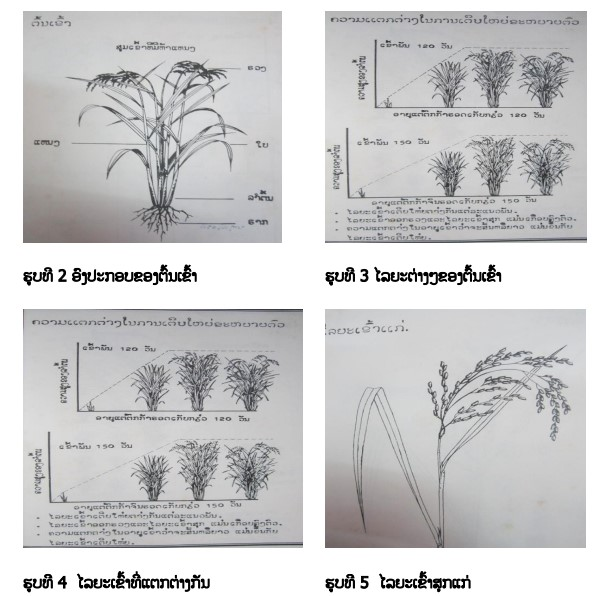
 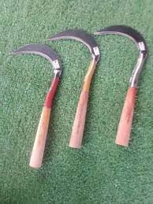
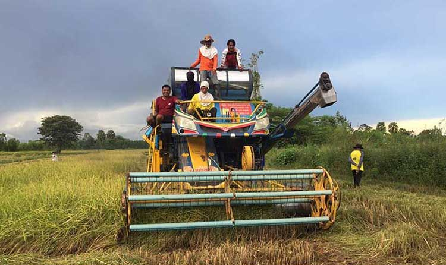
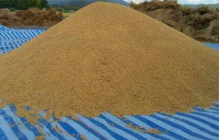
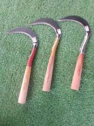
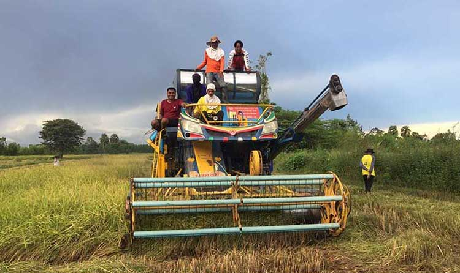
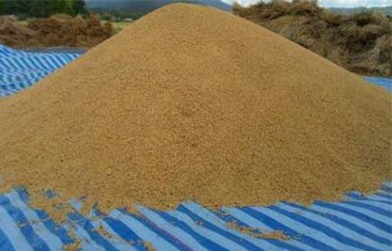
ການເກັບກ່ຽວ ແລະ ການເກັບຮັກສາ
ການເກັບກ່ຽວ
ລັກສະນະຂອງເຂົ້າທີິ່ເໝາະສົມຕໍ່ການເກັບກ່ຽວ
ການເກັບກ່ຽວ
ລັກສະນະຂອງເຂົ້າທີິ່ເໝາະສົມຕໍ່ການເກັບກ່ຽວ
ເມື່ອສັງເກດເຫັນວ່າ ຮວງເຂົ້າສຸກເຫຼືອງຈົນໝົດຄື ເຫຼືອງທາງກົກຮວງ (ຄໍຮວງ) 5-6 ເມັດ ທີິ່ຍັງມີສີຂຽວປົນເຫຼືອງຢູ່, ສ່ວນຢູ່ທາງກົກຮວງຫາປາຍຮວງໃຫ້ມີສີເຫຫຼືອງ, ວິທີການທົດສອບ ແມ່ນໃຫ້ເກັບເອົາເມັດເຂົ້າທີິ່ຢູ່ຄໍຮວງທີິ່ມີສີຂຽວປົນເຫຼືອງ ມາແກະເປືອກອອກ ນໍາເອົາເມັດເຂົ້າສານມາກັດ ເບິ່ງ ຖ້າເມັດເຂົ້າສານຂາດເປັນ 2 ທ່ອນກໍສະແດງວ່າ ສາມາດເກັບກ່ຽວໄດ້ແຕ່ຖ້າກັດເບິ່ງເມັດເຂົ້າສານ ຍັງມີນໍ້ານົມຢູ່ ແມ່ນໃຫ້ລໍຖ້າຈົນກວ່າເມັດເຂົ້າສານສາມາດຫັກອອກເປັນ 2 ທ່ອນ ແລ້ວຈຶິ່ງທໍາການເກັບ ກ່ຽວໄດ້ ຫຼື ຈະເກັບກ່ຽວໄດ້ພາຍຫຼັງທີິ່ດອກເຂົ້າບານປະມານ 30 ວັນ ໂດຍສະເພາະແມ່ນການເຮັດນາໃນ ເນື້ອທີິ່ຫຼາຍໆ ການເກັບກ່ຽວໃຫ້ສໍາເລັດນັ້ນຈະຕ້ອງໃຊ້ເວລາຫຼາຍ ທັງນີ້ກ ເພື່ອບໍ່ໃຫ້ເຂົ້າແກ່ເກີນໄປ ຈະເຮັດ ໃຫ້ເກີດຜົນເສຍຫາຍໄດ້. ໃນກໍລະນີນາຍັງມີນ ື້າຂັງຢູ ່ນັ້ນ ໃຫ້ລະບາຍນໍ້າອອກຈາກໄຮ່ນາ ກ່ອນການເກັບກ່ຽວປະມານ 10 ວັນ ເພື່ອໃຫ້ສະດວກໃນການເກັບກ່ຽວ.
ອຸປະກອນທີິ່ໃຊ້ໃນການເກັບກ່ຽວເຂົ້າ:
ເຄື່ອງມີ ທີິ່ໃຊ້ໃນການເກັບກ່ຽວເຂົ້າມີ ຫຼາຍຊະນິດ ເຄື່ອງມີທີິ່ນິ ຍົມໃຊ້ແຕກຕ່າງກັນໄປຕາມແຕ່ລະທ້ອງຖິ່ນຄື:
ກ. ກ່ຽວ: ເປັນເຄື່ອງມື ທີິ່ຊາວນານິຍົມໃຊ້ກັນຫຼາຍມີ2 ຊະນິດຄື: ກ່ຽວວົງກວ້າງ ແລະ ກ່ຽວວົງແຄບ (ກ່ຽວວົງກ້ວາງສ່ວນໃຫຍ່ຈະເປັນແຂ້ວ)
ຂ. ຕັນ: ເປັນເຄື່ອງມືທີິ່ເກັບກ່ຽວເຂົ້າໄດ້ເທື່ອລະຮວງ ເຮັດວຽກໄດ້ຊ້າຫຫຼາຍ ເໝາະສໍາລັບການເກັບກ່ຽວເຂົ້າທີິ່ສຸກບໍ່ພ້ອມກັນ ເຊິ່ງຈະໄດ້ເກັບກ່ຽວ 2-3 ຄັ້ງ ເຊິ່ງນິຍົມກັນຫຼາຍໃນປະເທດອິດສະລາມ.
ຄ. ເຄື່ອງຈັກກົນ: ເປັນເຄື່ອງມືທີິ່ເຮັດວຽກໄດ້ໃນປະລິມານຫຼາຍ ເໝາະສໍາ ລັບພື້ນທີິ່ໆກ້ວາງຂວາງນິຍົມກັນໃຊ້ຫຼາຍໃນປະເທດທີິ່ຈະເລີນ ເຊິ່ງມີທັງຊະນິດທີິ່ເກັບກ່ຽວ, ຟາດ, ທໍາ ຄວາມສະອາດ ແລະ ອົບເມັດໃຫ້ແຫ້ງໄປພ້ອມກັນ ແຕ່ສາມາດໃຊ້ໄດ້ໃນວົງຈໍາກັດ.
ການຕາກ:
ເນຶ່ອງຈາກເວລາເກັບກ່ຽວເຂົ້າ ເຂົ້າຍັງມີຄວາມຊຸ່ມສູງ ຈ ິ່ງຄວນຕາກ ແດດໄວ້ກ່ອນ, ການຕາກນັ້ນຖ້າແດດສະໝໍ່າສະເໝີດີຄວນຕາກພຽງແຕ່ 2-3 ແດດ ກໍພໍຈາກນັ້ນຈຶິ່ງທໍາ ການມັດ (ຖ້າກ່ຽວຢາຍ) ແລະ ຂົນຍ້າຍໄປບ່ອນທີິ່ຈະຟາດ, ຖ້າຕາກເຂົາດົນເກີນໄປ ຄຸນນະພາບຂອງເມັດ ຈະເສື່ອມກໍເປັນໄດ້, ປົກກະຕິຄວາມຊຸ່ມມາດຕະຖານທີິ່ເໝາະສົມແກ່ການເກັບຮັກສາແມ່ນ 13-14%.
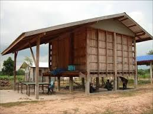
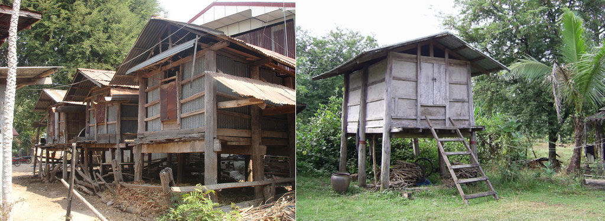
ການເກັບຮັກສາເຂົ້າ
ການກຽມສາງເຂົ້າ
ການກຽມສາງເຂົ້າ